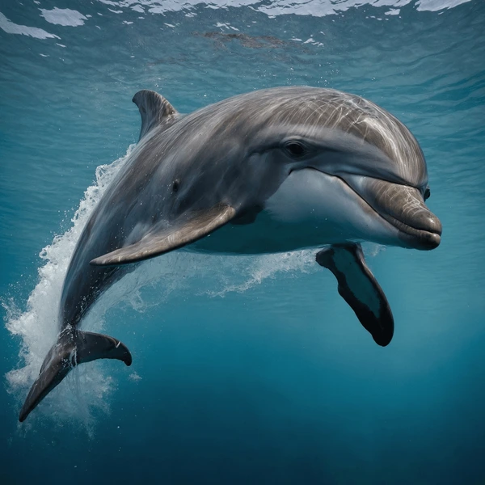

The Dolphin

Dolphins are my favorite animals because they are intelligent, friendly and amazing swimmers.
Interesting Facts:
- Dolphins can recognize themselves in a mirror,
- They use echolocation to find food.
- Dolphins are highly social and live in pods.
Learn More: